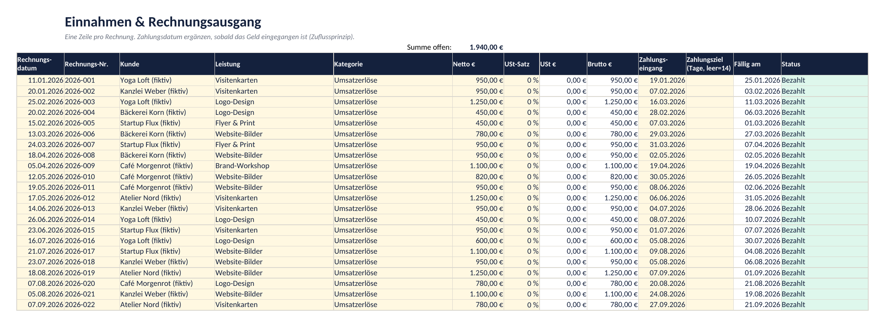
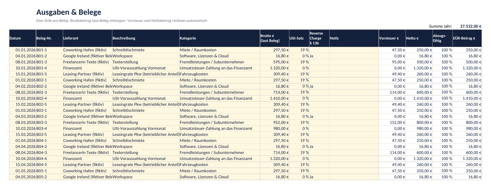
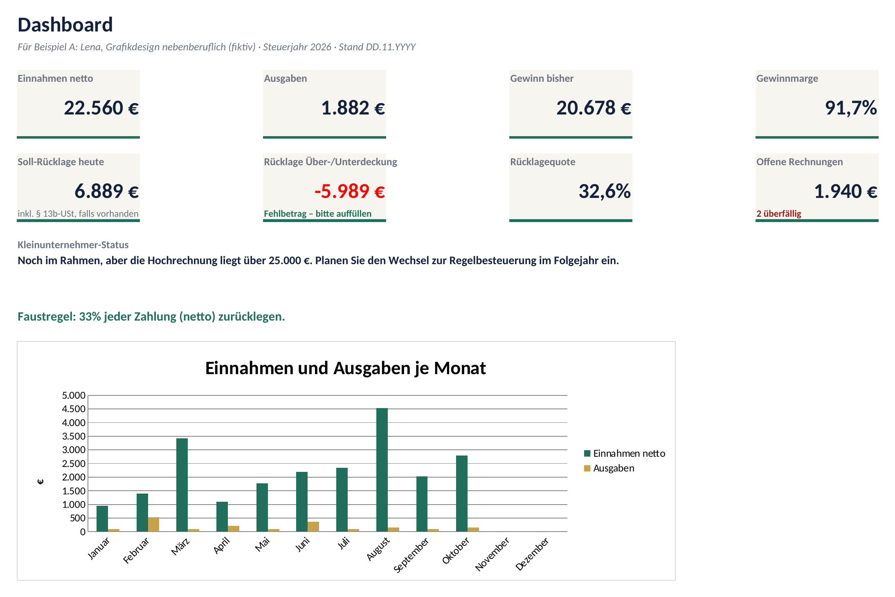
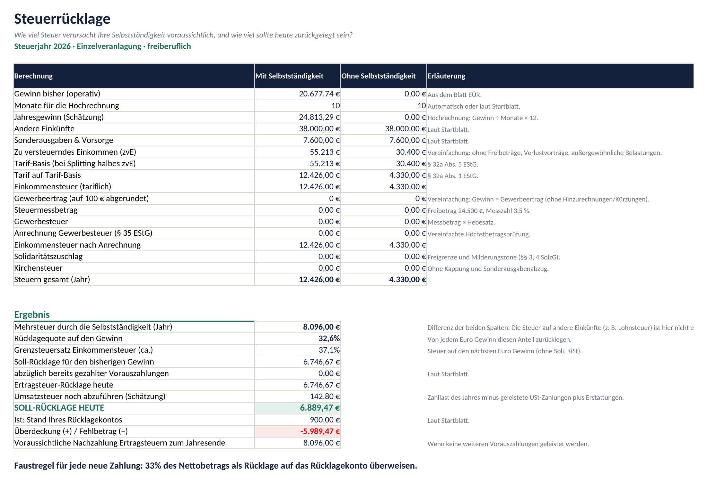
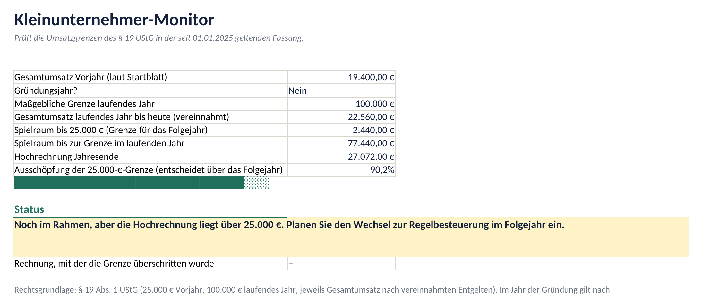
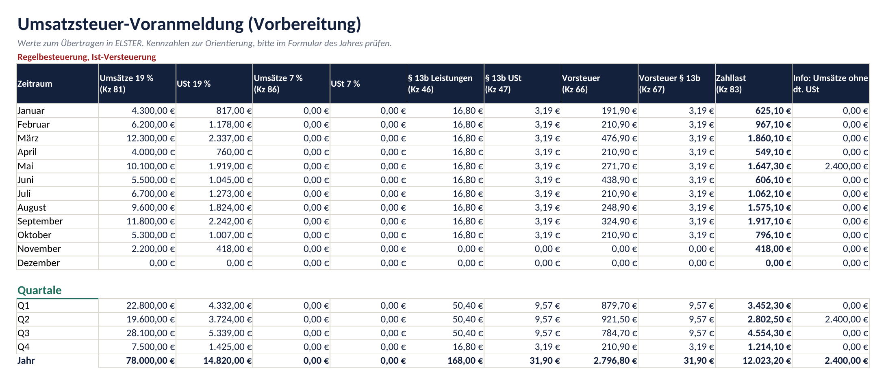
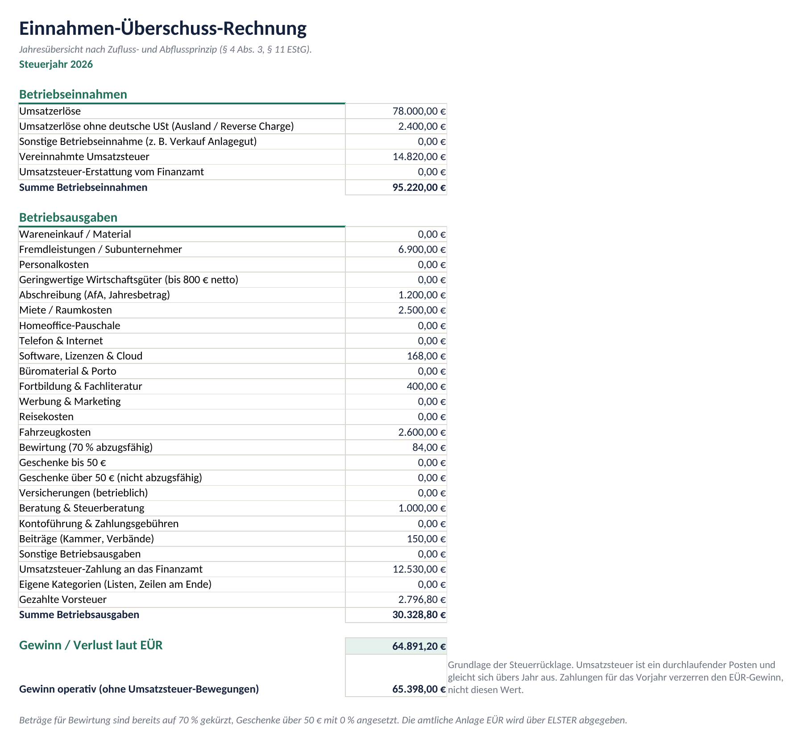
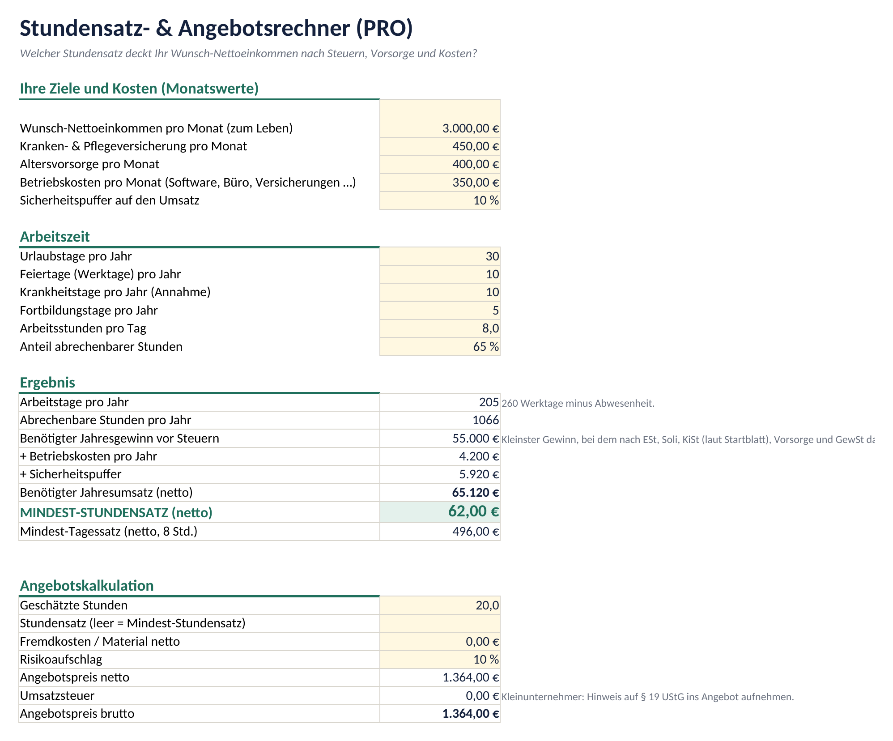
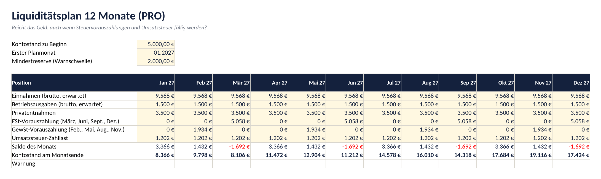

Handbuch für Einnahmen, Ausgaben, EÜR, Umsatzsteuer, Steuerrücklage und Kleinunternehmer-Monitor
Es gibt nichts zu installieren. Die Datei ist eine normale Arbeitsmappe ohne Makros und ohne Internetverbindung. Ihre Daten bleiben auf Ihrem Gerät.
| Programm | Status | Hinweise |
|---|---|---|
| Microsoft Excel 2016, 2019, 2021, Microsoft 365 (Windows/Mac) | unterstützt | Öffnen, bei Nachfrage „Bearbeitung aktivieren“ wählen. Die Formeln nutzen keine Funktionen, die nur in neuen Excel-Versionen existieren. |
| LibreOffice Calc 7.x und neuer | getestet | Alle Berechnungen wurden mit LibreOffice automatisiert gegen eine unabhängige Referenzrechnung geprüft. |
| Google Sheets | unterstützt | In Google Drive hochladen, dann „Öffnen mit Google Tabellen“. Der Blattschutz wird beim Import nicht übernommen. Überschreiben Sie keine weißen (berechneten) Zellen. |
| Apple Numbers | eingeschränkt | Numbers wandelt Dropdowns und bedingte Formatierungen teilweise um. Für den Alltag empfehlen wir Excel, LibreOffice (kostenlos) oder Google Sheets. |
Alle Blätter sind ohne Passwort geschützt, damit Formeln nicht versehentlich überschrieben werden. Eingabefelder (gelb) sind freigegeben. Wenn Sie etwas anpassen möchten: Überprüfen → Blattschutz aufheben (Excel) bzw. Extras → Tabelle schützen (LibreOffice). Ändern Sie Formeln nur, wenn Sie wissen, was Sie tun.
Nutzen Sie pro Steuerjahr eine eigene Kopie der Datei. Wählen Sie im Startblatt das Steuerjahr. Buchungen aus anderen Jahren werden ignoriert, Sie können also Rechnungen vom Dezember mit Zahlung im Januar problemlos in der Datei des Folgejahres erfassen.
| Feld | Was eintragen? |
|---|---|
| Steuerjahr | 2026 (oder 2025 für das Vorjahr). Bestimmt Tarif, Freigrenzen und welche Buchungen zählen. |
| Umsatzsteuer-Status | Kleinunternehmer, wenn Sie § 19 UStG anwenden (keine USt auf Rechnungen). Sonst Regelbesteuerung. |
| Versteuerungsart | Nur bei Regelbesteuerung: Ist-Versteuerung (USt nach Zahlungseingang) muss beim Finanzamt beantragt und genehmigt sein. Ohne Genehmigung gilt die Soll-Versteuerung (nach Rechnungsdatum bzw. Leistung). |
| Tätigkeit | Freiberuflich für Katalogberufe nach § 18 EStG (z. B. Designer mit künstlerischer Tätigkeit, Journalisten, Übersetzer, beratende Ingenieure). Gewerblich z. B. für Online-Shops, Agenturen, Handel. Die Abgrenzung ist im Einzelfall schwierig. Ihr Finanzamt hat Sie bei der Anmeldung (Fragebogen zur steuerlichen Erfassung) zugeordnet. |
| Hebesatz | Nur gewerblich: Gewerbesteuer-Hebesatz Ihrer Gemeinde (steht im Gewerbesteuerbescheid oder auf der Website der Gemeinde). Eingabe als Prozent, z. B. 410 %. |
| Gründungsjahr | „Ja“, wenn Sie die Tätigkeit im laufenden Jahr aufgenommen haben. Dann gilt für die Kleinunternehmerregelung die 25.000-€-Grenze. |
| Vorjahresumsatz | Gesamtumsatz (netto) des Vorjahres. |
| Veranlagung | Zusammenveranlagung nur bei Ehe oder eingetragener Lebenspartnerschaft. Dann die Einkünfte des Partners bei „Andere Einkünfte“ mit einrechnen. |
| Andere Einkünfte | z. B. Gehalt aus Anstellung abzüglich Werbungskosten (mindestens Arbeitnehmer-Pauschbetrag), Mieteinkünfte, Rente (steuerpflichtiger Teil). |
| Sonderausgaben & Vorsorge | Abziehbare Beiträge zu Kranken-, Pflege- und Rentenversicherung, Spenden, Kirchensteuer des Vorjahres. Im Zweifel konservativ schätzen; ein zu niedriger Wert führt zu einer höheren (sichereren) Rücklage. |
| Vorauszahlungen | Was Sie in diesem Jahr bereits an Einkommensteuer-, Soli-, Kirchensteuer- und Gewerbesteuer-Vorauszahlungen für dieses Jahr gezahlt haben. |
| Hochrechnung / Monate | Standard: Der bisherige Gewinn wird auf 12 Monate hochgerechnet. Bei stark saisonalem Geschäft „Nein“ wählen oder die Monate manuell setzen. |
| Rücklagekonto | Aktueller Kontostand Ihres Steuer-Rücklagekontos. |
Erfassen Sie jede Rechnung in einer Zeile. Das Cockpit folgt dem Zuflussprinzip (§ 11 EStG): Für Gewinn und Kleinunternehmergrenze zählt das Datum des Zahlungseingangs.

| Spalte | Hinweis |
|---|---|
| Kategorie | Umsatzerlöse für normale Rechnungen. Ohne deutsche USt für Leistungen an Unternehmen im Ausland (Reverse Charge) – diese zählen nicht zur Kleinunternehmergrenze und führen bei Regelbesteuerung zur Zusammenfassenden Meldung. Sonstige Betriebseinnahme z. B. für den Verkauf eines betrieblichen Laptops. USt-Erstattung für Geld, das das Finanzamt zurückzahlt. |
| Netto / USt-Satz | Kleinunternehmer tragen den Rechnungsbetrag als Netto ein; die USt-Spalte bleibt automatisch 0. Bei Regelbesteuerung 19 % oder 7 % wählen. |
| Zahlungsziel | Leer = 14 Tage. Daraus ergeben sich „Fällig am“ und der Status Offen, Überfällig (x Tage) oder Bezahlt. |
Tragen Sie immer den Bruttobetrag laut Beleg und den USt-Satz ein. Das Cockpit rechnet Vorsteuer und Nettobetrag selbst aus. Als Kleinunternehmer dürfen Sie keine Vorsteuer abziehen, deshalb zählt dann der volle Bruttobetrag als Ausgabe.


Das Dashboard rechnet ausschließlich mit Ihren Eingaben. Die Kacheln bedeuten:
Viele Vorlagen arbeiten mit pauschal „30 % zurücklegen“. Das ist für Nebenberufler mit gutem Gehalt oft zu wenig und für Gründer mit kleinem Gewinn oft zu viel. Das Finanzcockpit rechnet deshalb zwei Szenarien mit dem tatsächlichen Tarif:
Die Differenz ist die Steuer, die Ihre Selbstständigkeit zusätzlich auslöst. Sie berücksichtigt automatisch, dass Ihr Gewinn auf Ihr Gehalt „oben drauf“ kommt und deshalb mit Ihrem Grenzsteuersatz besteuert wird.

Nach der ersten Steuererklärung setzt das Finanzamt meist vierteljährliche Vorauszahlungen fest (10.03., 10.06., 10.09., 10.12.). Tragen Sie geleistete Vorauszahlungen im Startblatt ein; sie verringern die nötige Rücklage. Die erste Steuererklärung kann zu einer Nachzahlung für das Vorjahr und zu Vorauszahlungen für das laufende Jahr führen. Das ist der typische „Doppelschlag“, für den die Rücklage da ist.
Seit 01.01.2025 gilt (§ 19 Abs. 1 UStG): Kleinunternehmer ist, wessen Gesamtumsatz im Vorjahr 25.000 € nicht überschritten hat und im laufenden Jahr 100.000 € nicht überschreitet. Neu ist: Wer im laufenden Jahr die 100.000 € überschreitet, ist sofort – schon mit dem Umsatz, der die Grenze überschreitet – regelbesteuert. Im Jahr der Gründung gilt nach Verwaltungsauffassung die 25.000-€-Grenze.

| Status | Bedeutung |
|---|---|
| Alles im Rahmen | Sie bleiben unter 25.000 €; die Regelung ist auch im Folgejahr möglich. |
| Noch im Rahmen, Hochrechnung über 25.000 € | Bei gleichem Tempo überschreiten Sie 25.000 €. Im Folgejahr gilt dann die Regelbesteuerung: Preise kalkulieren, Rechnungsvorlagen und Software vorbereiten. |
| In diesem Jahr weiter Kleinunternehmer … | Sie liegen zwischen 25.000 € und der Jahresgrenze; ab 1. Januar Regelbesteuerung. |
| Grenze überschritten | Ab der genannten Rechnung gilt die Regelbesteuerung. Sprechen Sie umgehend mit Ihrer Steuerberatung und korrigieren Sie ggf. Rechnungen. |
Gezählt werden vereinnahmte Beträge der Kategorie „Umsatzerlöse“. Sonderfälle (steuerfreie Umsätze, Verkauf von Anlagevermögen, Auslandsumsätze) können abweichen.
Bei Regelbesteuerung zeigt das Blatt Umsatzsteuer pro Monat und Quartal die Werte, die Sie in ELSTER übertragen. Die Kennzahlen (Kz) dienen der Orientierung. Prüfen Sie sie im Formular des jeweiligen Jahres, da sich Formulare ändern können.


Die Gliederung orientiert sich an der Anlage EÜR. Beim Ausfüllen in ELSTER ordnen Sie die Summen den Zeilen des amtlichen Formulars zu. Das Blatt zeigt zwei Gewinnwerte:
Geben Sie Ihr Wunsch-Netto, Vorsorgebeiträge, Betriebskosten und Ihre realistische Arbeitszeit ein. Das Blatt sucht den kleinsten Jahresgewinn (in 1.000-€-Schritten), bei dem nach Steuern und Vorsorge Ihr Wunsch-Netto übrig bleibt, und daraus den Mindest-Stundensatz.
Darunter kalkulieren Sie Angebote mit Stunden, Fremdkosten und Risikoaufschlag.

12 Monate im Voraus: Einnahmen, Ausgaben, Privatentnahmen, Steuer-Vorauszahlungen und Umsatzsteuer. Gelbe Zellen sind mit Vorschlägen aus Ihren Daten vorbelegt und können überschrieben werden. Monate unter Ihrer Mindestreserve werden gelb, negative Kontostände rot markiert.

Blatt Fristen 2027 und die Kalenderdatei Steuerfristen-2027.ics (Import in Google Kalender, Outlook, Apple Kalender) enthalten bundesweite Fristen, bereits auf Werktage verschoben, jeweils mit Erinnerung drei Tage vorher. Landesfeiertage sind nicht berücksichtigt.
Die Formeln folgen § 32a EStG, §§ 3, 4 SolzG, § 11 GewStG, § 35 EStG und § 19 UStG in der für 2025 und 2026 geltenden Fassung. Nicht oder nur vereinfacht berücksichtigt werden:
Meist wurde eine berechnete Zelle überschrieben oder ein Text statt einer Zahl eingegeben (z. B. „1.200 €“ als Text). Geben Sie Beträge ohne Währungszeichen ein. Falls nötig, laden Sie die Originaldatei erneut herunter und kopieren Sie Ihre Eingabespalten hinein (nur gelbe Spalten).
Schreiben Sie uns. Für dieses Volumen ist eine Buchhaltungssoftware meist die bessere Wahl, und wir helfen gern bei der Einordnung.
Datum im Format TT.MM.JJJJ eingeben. In Google Sheets: Datei → Einstellungen → Gebietsschema: Deutschland.
Die Darstellung folgt der Spracheinstellung Ihres Programms bzw. Systems. Mit deutschem Gebietsschema erscheinen Zahlen als 1.234,00 €.
Die Lizenz gilt für Ihre eigene Nutzung. Für jede Firma bzw. jede selbstständige Person benötigen Sie eine eigene Lizenz. Details in den AGB.
Sobald die amtlichen Werte für 2027 feststehen, erscheint eine neue Ausgabe. Bestandskunden informieren wir per E-Mail, sofern sie dem zugestimmt haben.
Freikontor Finanzcockpit · Version 2026.1 · Support über das Kontaktformular auf der Website.